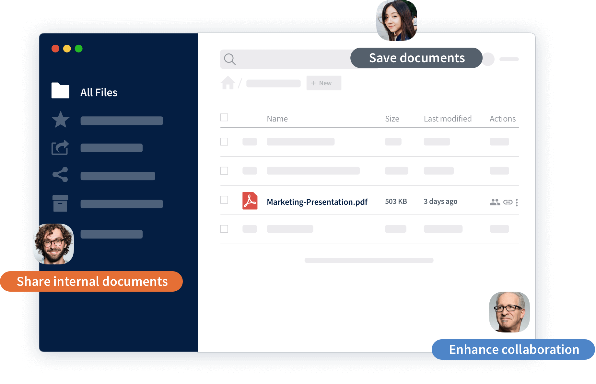

ownCloud - Einfaches, sicheres Filesharing

ownCloud ist die marktführende Open-Source-Software für Dateisynchronisation, -freigabe und Content Collaboration, mit der Teams von jedem Ort und auf jedem Gerät problemlos an Daten arbeiten können - so entsteht der digitale Arbeitsplatz der Zukunft.
Konsequent auf offenen Standards und Modularität basierend, eignet sich ownCloud als robuste und sicherheitsorientierte Dateiplattform sowohl für proprietäre als auch für Open-Source-Software-Umgebungen. OwnCloud bietet eine souveräne Dateiablage mit modernen, effizienten Produktivitätswerkzeugen bei gleichzeitig revisionssicherem Quellcode und umfassenden Freigabefunktionen.
ownCloud fügt sich nahtlos in jeden Arbeitsbereich ein, von Benutzerverzeichnissen über Sicherheitssysteme bis hin zu Monitoring- und Backup-Diensten - damit sensible Daten jederzeit unter Kontrolle bleiben. ownCloud ist so konzipiert, dass es individualisiert, gebrandet und auf die Bedürfnisse des Nutzers angepasst werden kann.
Die wichtigsten Funktionen von ownCloud auf einen Blick:
- Full digital workplace
- Wahlmöglichkeit zwischen On-Premises-, Hybrid- und Cloud-Speicher
- Hochsichere, verschlüsselte Content-Collaboration
- Sicheres Filesharing und Synchronisation
- Multiplattform auf allen Geräten
- Datenschutzkonform
- Erweiterbar & individualisierbar
- Nahtlose Integration für souveräne und proprietäre Arbeitsplätze
Weiterführende Informationen, wie ownCloud die Digitalisierung im öffentlichen Sektor mit vorantreibt erhalten Sie unter owncloud.com/de/digitalisierung-des-oeffentlichen-sektors
Geschichte
ownCloud wurde 2010 als Open-Source Projekt für File sync & Sharing gegründet und konstituierte sich 2011 als Unternehmen, um Unternehmen und Organisationen unterstützen zu können. Im Jahr 2012 wurde unser erster Kunde gewonnen. Als Open-Source Alternative zu Diensten wie Dropbox wurde ownCloud schnell zu einem der beliebtesten Open-Source Projekte weltweit mit über 1000 Beitragenden aus der Community. Im Jahr 2014 erhielt ownCloud eine Finanzierungsrunde von 6,3 Millionen Dollar und erreichte erstmals 1 Million Nutzer. 2016 verließ Frank Karlitschek, einer der Mitgründer, das Unternehmen, um einen eigenen Fork der ownCloud Platform aufzubauen.
Unter der neuen Führung durch CEO Tobias Gerlinger und Mitgründer sowie COO Holger Dyroff, schärfte die ownCloud GmbH in Nürnberg daraufhin den Fokus darauf, die stabilste, zuverlässigste und sicherste Open-Source Plattform für den digitalen Arbeitsplatz, Content Collaboration und sicheres File Sharing zu werden. Unser Angebot: Professionelle Unterstützung für Projekte der Größenordnung und Komplexität!
Unser Team hat es sich zur Aufgabe gemacht, Open-Source Technologie für anspruchsvolle Unternehmensumgebungen und wissenschaftliche Bedürfnisse bereitzustellen – nicht etwa trotz unserer Open-Source Überzeugung, sondern gerade deshalb! So konnten wir unseren Plattformkern kontinuierlich weiterentwickeln, neue Features und Integrationen hinzufügen sowie unsere Enterprise Edition noch performanter machen.
Im Jahr 2018 wurde ownCloud im Gartner Magic Quadrant for Content Collaboration Platforms (CCP) als einzige Open-Source Lösung weltweit gelistet.
2019 etablierten wir mit ownCloud.online unser erstes SaaS-Angebot, das perfekt auf die Bedürfnisse von kleinen und mittleren Unternehmen abgestimmt ist.
Heute arbeiten rund 75 Mitarbeitende zumeist remote für ownCloud und entwickeln unsere marktführende Plattform weiter. Wir ermögliche es Unternehmen, Bildungseinrichtungen, Organisationen und öffentlichen Institutionen einfach und sicher Dateien zu teilen, gemeinsam daran zu arbeiten und einen datensouveränen digitalen Arbeitsplatz zu etablieren – egal wo und unabhängig von der Wahl des Endgeräts. Über 500 Kunden und rund 200 Millionen User weltweit nutzen bereits ownCloud als Alternative zu Public Clouds und entscheiden sich damit für mehr digitale Souveränität, Sicherheit und Datenschutz.